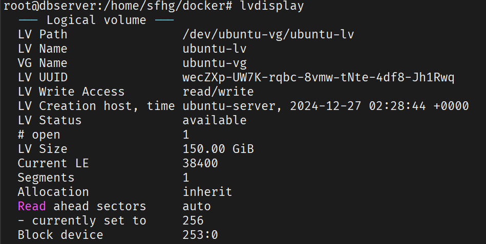

逻辑卷扩容
使用lvdisplay查看当前逻辑卷信息

复制 LV Path /dev/ubuntu-vg/ubuntu-lv
使用lvextend -L +50G /dev/ubuntu-vg/ubuntu-lv对逻辑卷进行扩容50G
刷新分区情况
使用resize2fs /dev/ubuntu-vg/ubuntu-lv刷新，然后使用df -h查看分区情况
新系统磁盘挂载记录
-
使用
df -hT命令查看当前磁盘的挂载、已用大小、可用大小以及文件系统类型2. 使用root@user:~# df -hT Filesystem Type Size Used Avail Use% Mounted on tmpfs tmpfs 13G 2.9M 13G 1% /run /dev/mapper/ubuntu--vg-ubuntu--lv ext4 98G 12G 82G 13% / tmpfs tmpfs 63G 0 63G 0% /dev/shm tmpfs tmpfs 5.0M 0 5.0M 0% /run/lock /dev/sda2 ext4 2.0G 126M 1.7G 7% /boot /dev/sda1 vfat 1.1G 5.3M 1.1G 1% /boot/efi tmpfs tmpfs 13G 4.0K 13G 1% /run/user/1000 tmpfs tmpfs 13G 4.0K 13G 1% /run/user/0lsblk列出块设备（如硬盘、分区、LVM 卷等）及其挂载信息3. 根据上述磁盘情况可知，根目录挂载在逻辑卷root@user:~# lsblk NAME MAJ:MIN RM SIZE RO TYPE MOUNTPOINTS loop0 7:0 0 61.9M 1 loop /snap/core20/1405 loop1 7:1 0 79.9M 1 loop /snap/lxd/22923 loop3 7:3 0 50.9M 1 loop /snap/snapd/24505 loop4 7:4 0 89.4M 1 loop /snap/lxd/31333 sda 8:0 0 446.1G 0 disk ├─sda1 8:1 0 1G 0 part /boot/efi ├─sda2 8:2 0 2G 0 part /boot └─sda3 8:3 0 443.1G 0 part └─ubuntu--vg-ubuntu--lv 253:0 0 100G 0 lvm / sdb 8:16 0 2.2T 0 diskubuntu--vg-ubuntu--lv上。 这个逻辑卷是通过 LVM（Logical Volume Manager） 管理的。 -
设备层级：
-
物理磁盘：sda 是一个 446.1GB 的磁盘。
-
分区：
- sda1（1GB）：挂载为 /boot/efi（EFI 系统分区，通常用于 UEFI 启动）。
- sda2（2GB）：挂载为 /boot（存放内核和启动文件）。
- sda3（443.1GB）：用作 LVM 物理卷（Physical Volume, PV）。
-
LVM 结构：
- sda3 被分配给一个 LVM 卷组（Volume Group, VG），名为 ubuntu--vg。
- 在 ubuntu--vg 中，创建了一个逻辑卷（Logical Volume, LV），名为 ubuntu--lv，大小为 100GB。
- 这个逻辑卷 ubuntu--vg-ubuntu--lv 被格式化并挂载为根目录（/）。
- 扩展逻辑卷 ubuntu-lv ，使用
sudo lvextend -L +100G /dev/ubuntu-vg/ubuntu-lv命令可以扩展 100G 空间。 - 扩展文件系统，扩展逻辑卷后，你还需要扩展文件系统，以便操作系统能识别和使用新增的空间。由于根目录是 ext4 类型（从 df -hT 结果推断），可以使用 resize2fs，详细命令为
sudo resize2fs /dev/ubuntu-vg/ubuntu-lv。 - 验证，使用
df -hT /可查看根目录空间已增加。 - 挂载
sdb并将其加入逻辑组。 -
在 sdb 上创建一个单一分区，然后将该分区作为 LVM PV 操作步骤示例：
-
分区 sdb：
这将创建 /dev/sdb1。sudo fdisk /dev/sdb # 在 fdisk 交互界面中： # n # 创建新分区 # p # 主分区 # 1 # 分区号 1 # 回车 # 接受默认起始扇区 # 回车 # 接受默认结束扇区，使用整个磁盘 # t # 改变分区类型 # 8e # LVM 的十六进制代码 # w # 写入分区表并退出-
创建 LVM 物理卷：
3. 扩展卷组： 10. 查看逻辑组可用空间大小sudo vgdisplay ubuntu-vg可知有 2T 多的可用空间，说明 /dev/sdb1 已经成功加入逻辑组 11. 再使用步骤 5、6 的命令进行空间扩展 12. 使用root@user:~# vgdisplay ubuntu-vg --- Volume group --- VG Name ubuntu-vg System ID Format lvm2 Metadata Areas 2 Metadata Sequence No 4 VG Access read/write VG Status resizable MAX LV 0 Cur LV 1 Open LV 1 Max PV 0 Cur PV 2 Act PV 2 VG Size 2.43 TiB PE Size 4.00 MiB Total PE 637707 Alloc PE / Size 76800 / 300.00 GiB Free PE / Size 560907 / <2.14 TiB VG UUID 2qRo3Y-uar3-Ww6i-tKwf-cQkN-vHiR-MxCfEOdf -hT进行验证，至此，磁盘挂载及扩容完成。
-